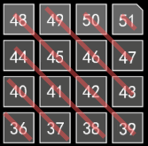
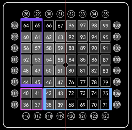

概念：
在制作灯光之前，我们先要了解一些概念，这样会使得你的制作逻辑更清晰可更改性更强。
基类(基层)：最基础的单位是组成框架的一部分。
子类(派生类)：由基类衍生出来的类。
框架：由许多基类和子类组成的类。
成品：对框架进行上色等操作形成的成品。
以上的概念都是相对的，
比如：对一个整pad的灯光来说，左下左上右下右上可以被认为是4个基类，整个pad为框架；对于左下这个区域，每一行认为是1个基类，那么左下这个区域也可以被认为是一个框架。
实例：
那么，有了一个想法，我们得先分析怎么做才是最好的。(每个人对于同一个灯光都有自己觉得最优的画法，所以也不用拘泥于本文档制作的思路)
我们首先把pad划分成四个区域：左下左上右下右上，那么最先出现的是左下角。
对于左下角，从最下面一排设想，第一秒出现的是36，之后是37、38、39，这么一个运动过程。

那么，我们就可以开始制作最后一排了。
快速生成》
时间：0(从第0帧开始)，
范围：36-39(如图)，
间隔：12(范围之间间隔时间，如果间隔为0，那么范围内的格子会同时亮起)，
持续：12(根据BPM，在96BPM下，持续时间等于12/96[八分之一秒])，
颜色：5(制作框架的时候通常选择最基础鲜艳的颜色，也便于观察)，
类型：上(暂时用不上其他的)。
按下“添加”或“选中”。
那么我们就做好了第一排，此时步骤栏会多出Step1(步骤1)。
接下来，我们要思考第一排和第二排是否有关联(是否可以通过修改第一排某些数值来得到第二排)。
得到的结果是，第二排的时间比第一排时间迟一格(即相差了一格的间隔，如上面则是间隔了12)，位置同比相差4。
那么，我们可以通过：
①先选中上面生成的Step1(如果生成时按下的是“选中”，那么可以跳过此步骤)，
②选中编辑》
时间：+12，位置：+4。
按下“添加”。
此时会得到且选中第二排(Step2)。
第三排和第四排之间的关系与之前相同，所以只需要继续按2次“添加”即可获得左下区四排，完成了一个(准)小框架。
分析时也应该想到，4个区域的运动都是一样的，只是时间不同。那么我们就可以复用刚刚做好的(准)小框架。
为什么说是带准字的？因为这个小框架并没有变成一个整体，所以我们先要把它变为一个整体：①取消Step2.3.4的父类关系，步骤右键-取消父类关系，②选中四个步骤(按住Ctrl挨个点，或者选中头按住Shift再选中尾)-合并。
那么，这时候(准)小框架就变成了小框架。
接下来，我们就接着做左上角。左上角与左下角的关系为时间隔了4格，位置隔了16。
那么我们就：
①选中小框架，
②选中编辑》
时间：+48(4*12)，位置：+16。
得到了左上角。
右下角可由左下角变化：
时间：+48，位置：+32。
右下角也可以由左上角变化：
时间：+0(也可空)，位置：+16。
右上角可以通过三种方式变化得到，文档中只说明其中一种。
①选中右下角，②时间：+48，位置：+16。
合并四个区域。
那么至此，左下角至右上角的扩散的框架就搭建好了。
附：框架变成彩虹灯的扩散。
选中完成的框架，菜单栏-编辑-叠加-颜色叠加(跟随)，
在弹出的对话框中输入：5 (空格)9 13 17 33 37 45 49 53
然后点击“确定”即可获得「成品」彩虹色的左上到右上扩散。

方块移动可以朝两种方向的，也就是垂直移动(紫色)和水平移动(蓝色)。
通过观察可以得出，垂直移动整个过程都是有规律的(位置+4)，那么我们就可以先塑造一个方块(基类)，通过依次+4来完成垂直移动；而水平移动，可以看到经过红色线时的移动是非常规变化(但也是有规律的，可以通过条件判断来修正)，我们可以以一小格(如36)单块进行变化得出。
垂直移动：
构造方块：
快速生成》
时间：0(从第0帧开始)，
范围：36 37 40 41(如图)，
间隔：0(间隔为0，那么范围内的格子会同时亮起)，
持续：12(根据BPM，在96BPM下，持续时间等于12/96[八分之一秒])，
颜色：5(制作框架的时候通常选择最基础鲜艳的颜色，也便于观察)，
类型：上(暂时用不上其他的)。
按下“添加”或“选中”。
那么我们就做好了方块，此时步骤栏会多出Step1(步骤1)。
依次移动：
①选中方块步骤，
②选中编辑》
时间：+12，位置：+4。
按下“添加”按钮。
此时方块就在第二帧时向上移动了一个，且选中了步骤2。
接着再连续按5次“确定”，就会依次向上移动到顶端。
如此一来垂直移动的(伪)框架就搭建完成了。
水平移动：
首先，我们做36块的单个水平移动：
快速生成》
时间：0(从第0帧开始)，
范围：36-39 68-70(如图)，
间隔：12
持续：12(根据BPM，在96BPM下，持续时间等于12/96[八分之一秒])，
颜色：5(制作框架的时候通常选择最基础鲜艳的颜色，也便于观察)，
类型：上(暂时用不上其他的)。
按下“添加”或“选中”。
那么我们就做好了单格移动，此时步骤栏会多出Step1(步骤1)。
接下来可以像上面一样再逐个制作剩下三格。
只需要修改范围即可：
①37-39 68-71
②40-43 72-74
③41-43 72-75
如此一来水平移动的(伪)框架就搭建完成了。